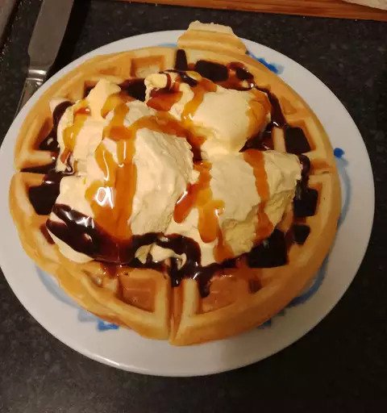

Classic Waffles

Description
Waffles Waffles Waffles easily one of the most famous breakfast foods.
I personally enjoy them especially since they're easy to make. Waffles can be served with a
variety of toppings and sides making them an ideal food.
This easy waffle recipe will take about a total of 25 minutes with a 15 minute cook time.
It serves 5 people with simple ingredients you probably have at home already. You can get the whole
family involved in the cooking process and remember, if it flops
you can just make pancakes.
Ingredients
- 2 cups all-purpose flour
- 1 teaspoon salt
- 4 teaspoons baking powder
- 2 tablespoons white sugar
- 2 eggs
- 1 ½ cups warm milk
- ⅓ cup butter, melted
- 1 teaspoon vanilla extract
Steps
- Gather all ingredients.
- In a large bowl, mix together flour, salt, baking powder and sugar; set aside. Preheat waffle iron to desired temperature.
- In a separate bowl, beat the eggs. Stir in the milk, butter and vanilla.
- Pour the milk mixture into the flour mixture; beat until blended.
- Ladle the batter into a preheated waffle iron.
- Cook the waffles until golden and crisp.
- Serve immediately and enjoy!